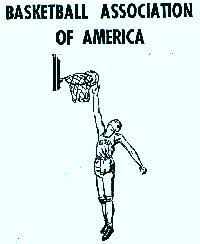

LA HISTORIA DE LA NBA
Los inicios
La NBA fue fundada en 1946 como la Basketball Association of America (BAA), una liga profesional que incluía a equipos de ciudades como Nueva York, Chicago y Filadelfia. En los primeros años, la liga tuvo problemas financieros y de asistencia, pero comenzó a prosperar en la década de 1950.
Durante la década de 1950, la NBA se enfrentó a la competencia de otra liga de baloncesto profesional, la National Basketball League (NBL). En 1950, la NBA y la NBL se fusionaron, creando una liga de baloncesto profesional unificada. A medida que la popularidad de la NBA aumentaba, la liga comenzó a atraer a más jugadores talentosos, como Wilt Chamberlain y Bill Russell.

+
=

La dinastía Celtic
En cuanto a los equipos, los Minneapolis Lakers dominaron gran parte de los años 50, ganando cinco campeonatos en siete años liderados por George Mikan, quien se convirtió en el primer gran ídolo de la liga. Los Boston Celtics también comenzaron a emerger como un equipo de élite bajo el liderazgo de su entrenador, Red Auerbach, y del centro Bill Russell. Los Celtics ganaron su primer campeonato en 1957 y luego se convertirían en el equipo dominante en los años 60.
En los años 60, la NBA experimentó un gran crecimiento de popularidad gracias a la televisión, que comenzó a transmitir partidos en todo el país. La rivalidad entre los Celtics y Los Angeles Lakers también se intensificó, gracias a los duelos entre dos grandes jugadores: Bill Russell y Wilt Chamberlain. Los Celtics ganaron ocho campeonatos en fila, lo que sigue siendo un récord en la liga, y los Lakers finalmente ganaron su primer campeonato en 1972 liderados por Chamberlain y Jerry West.
Otras figuras importantes de la época incluyen a Elgin Baylor, Oscar Robertson y Jerry Lucas, quienes fueron fundamentales en el crecimiento y desarrollo de la NBA en los años 60.
Aparación de nuevo talento
La década de 1970 fue testigo de una serie de cambios significativos en la NBA, tanto en términos de jugadores como de equipos. A medida que la popularidad de la liga crecía, también lo hacía el salario de los jugadores y la influencia de la Asociación de Jugadores de la NBA (NBA Players Association) en las decisiones de la liga.
En 1976, la NBA se expandió a 22 equipos con la adición de los equipos de los Buffalo Braves, Cleveland Cavaliers, Houston Rockets y Portland Trail Blazers. Durante los años 70, los jugadores afroamericanos comenzaron a dominar la liga, liderados por estrellas como Kareem Abdul-Jabbar, Julius Erving y Elvin Hayes. En 1979, la liga añadió una nueva regla, la "regla de los 3 segundos", que limitaba el tiempo que un jugador podía estar en la pintura del equipo contrario.
En la década de 1980, la NBA experimentó un resurgimiento en popularidad gracias en gran parte a la rivalidad entre dos de sus mayores estrellas, Magic Johnson y Larry Bird. Esta rivalidad culminó en el campeonato de 1984 en el que los Boston Celtics derrotaron a Los Angeles Lakers en una emocionante serie de siete juegos.
Además de la rivalidad entre Johnson y Bird, la década de 1980 también fue testigo de otros grandes jugadores como Michael Jordan, que debutó en la NBA en 1984, y los equipos dominantes de los Lakers de los 80 y los Celtics de los 80, que ganaron múltiples campeonatos.
La época Dorada
Los años 90 fueron una década de grandes cambios y logros para la NBA. La década comenzó con los Detroit Pistons ganando el campeonato en 1990, pero el equipo que dominaría gran parte de la década serían los Chicago Bulls liderados por Michael Jordan. Jordan ganó seis campeonatos en la década, y es considerado por muchos como el mejor jugador de baloncesto de todos los tiempos.
Los años 90 también fueron testigos del crecimiento global de la NBA, con jugadores de todo el mundo uniéndose a la liga y llevando el juego a nuevos niveles de popularidad. Los Dream Team, compuesto por los mejores jugadores de la NBA, ganó fácilmente la medalla de oro en los Juegos Olímpicos de 1992, lo que ayudó a aumentar el interés en el baloncesto a nivel mundial.
Además de Jordan, otros grandes jugadores dominaron la década, incluyendo a Magic Johnson, Larry Bird, Hakeem Olajuwon, Charles Barkley y Shaquille O'Neal. La rivalidad entre los Bulls y los New York Knicks también fue uno de los momentos más memorables de la década.
En cuanto a los equipos, los Bulls fueron el equipo dominante de la década, ganando seis campeonatos en ocho años. Los Houston Rockets también ganaron dos campeonatos consecutivos en 1994 y 1995, liderados por Olajuwon.
Las nuevas estrellas
La NBA en el nuevo milenio ha sido una época de cambios significativos tanto dentro como fuera de la cancha. Una de las mayores influencias en la liga ha sido el advenimiento de las redes sociales y la digitalización de los medios de comunicación. Los jugadores ahora tienen una plataforma global para conectarse directamente con los fanáticos y crear su propia marca personal.
En la cancha, la NBA ha visto una nueva generación de jugadores estrella, incluyendo a Kobe Bryant, LeBron James, Kevin Durant y Stephen Curry. Bryant y James lideraron la liga en popularidad y éxito en la década de 2000, mientras que Durant y Curry lideraron a los Golden State Warriors a un récord de 73 victorias en la temporada regular de 2015-2016, superando el récord de 72 victorias de los Chicago Bulls de 1995-1996.
La NBA también ha sido testigo de una mayor globalización del baloncesto, con más jugadores internacionales en la liga que nunca antes. La liga ha respondido a esto mediante la organización de juegos de exhibición en todo el mundo y la creación de academias de baloncesto en varios países.
Otro cambio importante en la NBA en la década de 2000 ha sido la creciente importancia de los analíticos y la estadística avanzada. Los equipos utilizan ahora análisis de datos para tomar decisiones sobre la construcción del equipo, las estrategias de juego y la evaluación del rendimiento de los jugadores.